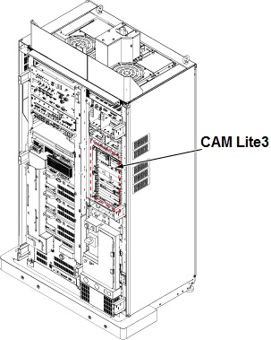
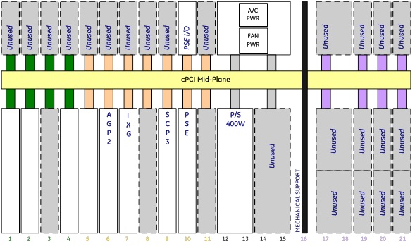
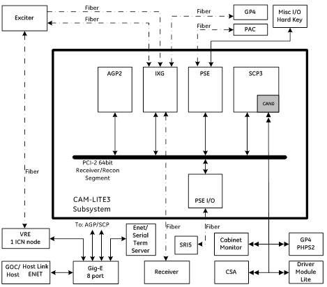

CAM Lite3 Theory
This component replaced MGD Lite and ASC Lite.
The Consolidated ASC MGD lite3 chassis (CAM Lite3) consolidates the components of the Multi-Generational Data acquisition chassis (MGD) and Amplifier Support Controller (ASC) chassis into one unit on the forward production Systems cabinets. The CAM-lite3 chassis combines the individual ASC and MGD boards into a common chassis.
Figure 1. CAM-LITE LOCATION

The CAM-lite3 contains a custom 6U cPCI midplane that is comprised of a single custom bus segment, two cPCI bus segments and a common power system. This midplane will be referred to as the CAM-lite3 midplane. The chassis has a right to left airflow path and utilizes two variable speed DC exhaust blowers. Power is distributed through up to two cPCI pluggable power supplies. Controller Area Network (CAN) communications and power supply test points are provided through an assembly mounted in the chassis
Refer to Figure 2 for the CAM Lite3 slot configuration.
Figure 2. CAM LITE 3 SLOT CONFIGURATION

Figure 3. CAM-lite3 and system Diagram

Refer to ASC Lite Theory for the ASC Lite Theory of each function.